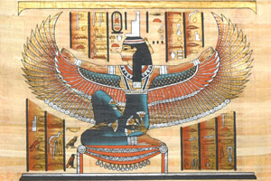
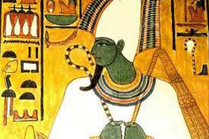
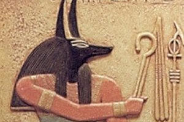

|  | Isis was a female diety/mother-goddess who answered the prayers of everyone from sinners and beggars to the wealthy pharoahs. |
|  | Osiris was the husband of Isis, and a god of resurrection, transformation and regeneration. |
|  | Anubis was the protector of graves, god of embalming & mummification and the judge of departing souls. Later on, around 2055 B.C., he became the God of the underworld (replacing Osiris.) |